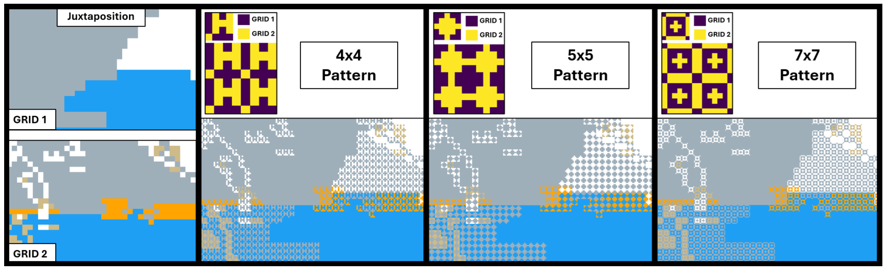

Comparison of Categorical Data from Meteorological Models and Observations using a Pattern-Based Approach

(opens in new tab)
Venue. EnvirVis (2026)
Materials.
DOI(opens in new tab)
PDF(opens in new tab)
Abstract. This paper introduces a pattern-based approach for comparing large categorical gridded data. Our goal is to compare meteorological models and observations given as time-height data. The data come with constraints, including heavy noise and model and observation uncertainties. We define requirements with domain experts and propose design criteria tailored to the application domain. We explore the design space of feasible patterns and propose three patterns designed to resolve the drawbacks of juxtaposition with estimating (dis)agreement and superposition with disambiguation of the comparison source. We also conduct a crowdsourced experiment with a small group of non-expert users, providing initial insights into how the proposed approach might advance the field of comparative visualizations for categorical data.
Link to this page: